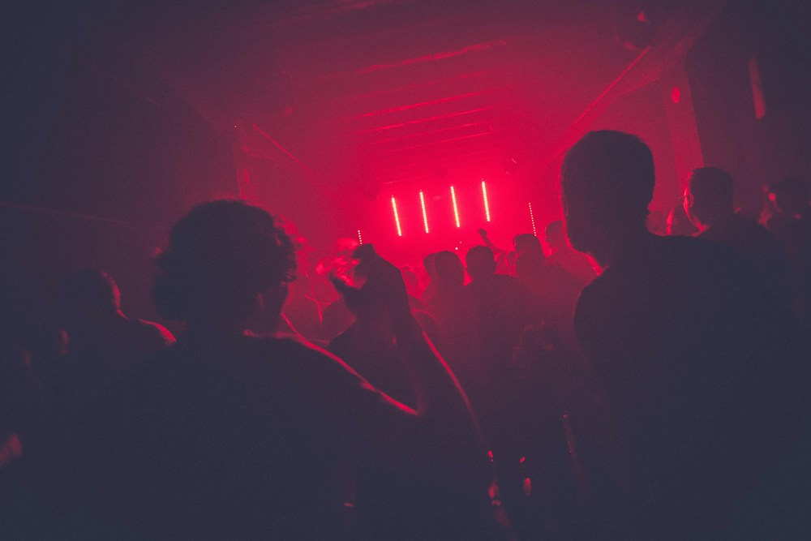

FUSE RADIO / ORIGINAL RECORDINGS
A BETTER KIND OF BACKGROUND NOISE — 2026 / VOL. 01
Stay for
the feeling.
Sounds for crossing town, staying late, starting over. 100 original instrumental and artist recordings from the Fuse listening room. Find your frequency.
THE RECORD SHELF / 01
Fresh out
of the room.
NO SKIPS. NO FILLER.
JUST THE GOOD STUFF. ↓
JUST THE GOOD STUFF. ↓
TAKE THE LONG WAY HOME. ↗
THE INDEX / 02
Find your
frequency.
Search by title, artist, record, tempo or feeling.
RESULTS
YOUR CORNER / 03
Keep what
moves you.
Saved here, on this device. Your taste stays yours.
LIKED TRACKSYOUR SHELF
MAKE SOMETHING OF IT
Your sets.
THE RUNNING ORDER / 04
Coming
right up.
Shape what plays next. Your queue follows you around the site.
UP NEXT
THE PEOPLE & THE PLACE
Made to
be heard.
Fuse Music is a Sydney listening room for original instrumental sound. Put it on. Let it take you somewhere.

Say hello.
Got a question about the music? We actually read the mail.
help@fusemusic.com.au ↗+61 2 9699 7555 ↗Find us.
499 Crown StreetSurry Hills, Sydney NSW 2010
Australia
ABN 73 727 962 025
Fax +61 2 9699 0222